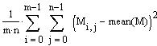
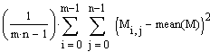

Variance and Standard Deviation |
var(A, B, C, ...) Returns the population variance of the elements of A, B, C, ...

Var(A, B, C, ...) Returns the sample variance of the elements of A, B, C, ...

where M is an array created from the function arguments A, B, C, ...
stdev(A, B, C, ...) Returns the square root of the population variance of the elements in A, B, C, ...
Stdev(A, B, C, ...) Returns the square root of the sample variance of the elements in A, B, C, ...